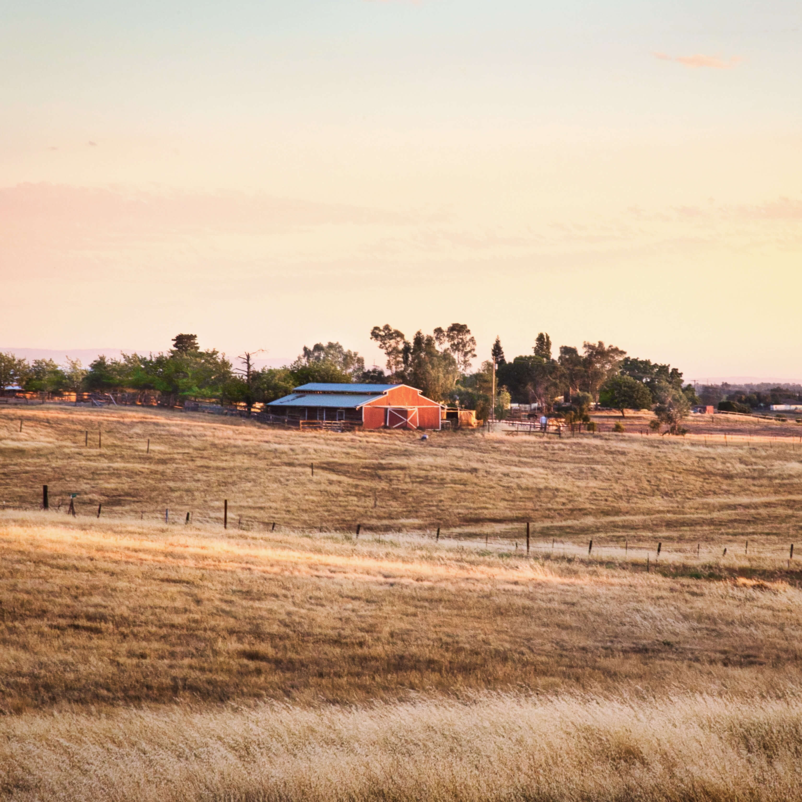

<div class="wrapper">
<!-- intro sekce -->
<section class="section section-intro">

    <div class="section__column-flex">
        <div class="section__column">
            
        </div>

        <div class="section__column">
            <h2 class="heading-h2">Kdo jsme?</h2>
            <p class="intro__text">Vítejte na stránkách farmy Kohoutky! Jsme malá rodinná farma, která se nachází v krásné přírodě na venkově u Brna, kde jsme se postavili za udržitelný způsob hospodaření. Chceme tímto způsobem přispět k ochraně přírody a zajištění zdravého prostředí pro naše zvířata i pro lidi, kteří si naše produkty pochutnávají. Na našich stránkách se můžete seznámit s historií a vývojem naší farmy a dozvědět se více o tom, jak se staráme o naše zvířata a produkujeme kvalitní a zdravé potraviny pro naše zákazníky.</p>
            <a class="button" href="#">Více</a>
        </div>
    </div>


    <div class="section__column-flex section__column-flex--reverse">
        <div class="section__column">
            
        </div>

        <div class="section__column">
            <h2 class="heading-h2">Produkty z naší farmy</h2>
            <p class="intro__text">Na naší farmě se věnujeme chovu krav, ovcí, koz a slepic, které poskytují kvalitní mléko a vejce. Díky tomuto chovu dokážeme nabídnout několik druhů mléčných výrobků, jako jsou jogurty, sýry a tvaroh, a také chutné vejce od našich slepic. Pokud máte zájem o naše produkty, můžete je snadno a pohodlně objednat přes náš formulář na stránkách. Rádi vám je doručíme ať už osobně, nebo prostřednictvím kurýra.</p>
            <a class="button" href="#">Více</a>
        </div>
    </div>


</section>

</div>


